How My Love
for Matcha Began
My love for matcha started when a café opened in our town. At first, I didn’t order matcha because many people said it tasted like grass. But since I love exploring and trying new things, I decided to give it a try. The first sip changed everything. That’s when my love for matcha truly began.
The café that introduced me to matcha became my favorite place whenever I had cravings. Their drinks were high quality, and as an introvert, I appreciated how quiet, relaxing, and not too crowded the place was. From that moment on, every time I visit a different café, I always order matcha. It became my go-to drink and my little source of comfort.
My Matcha
Gallery
This gallery features my personal matcha photos, including DIY recipes and café finds. Click the button below to see my recommended cafés for matcha in different places.
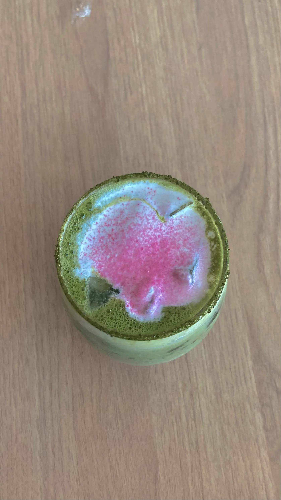
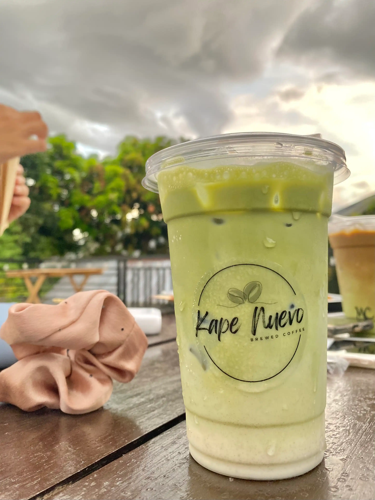
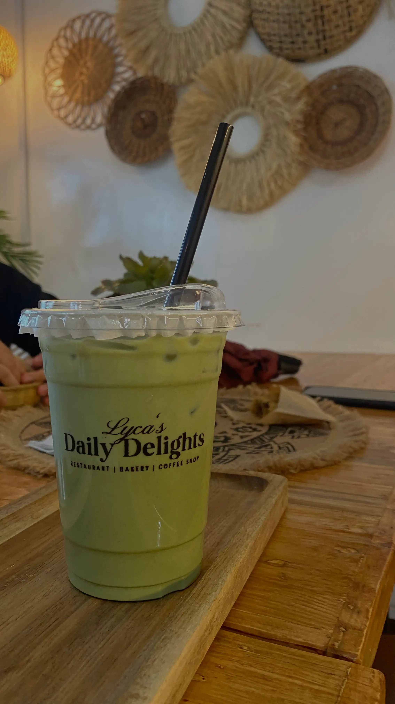
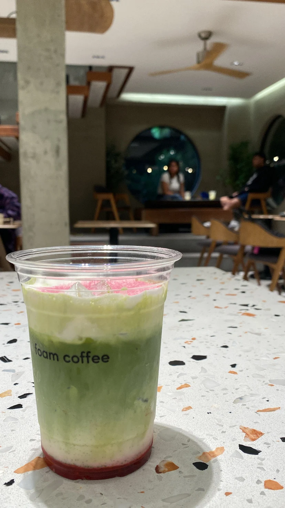
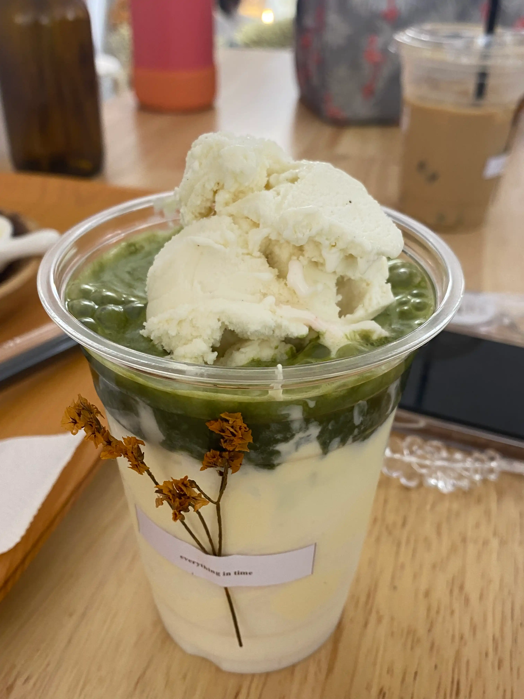
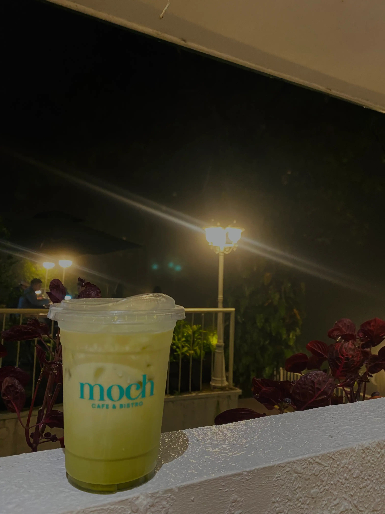
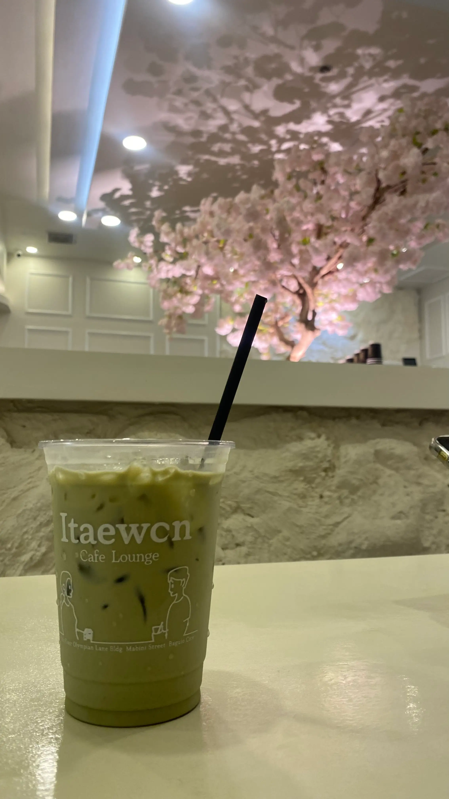
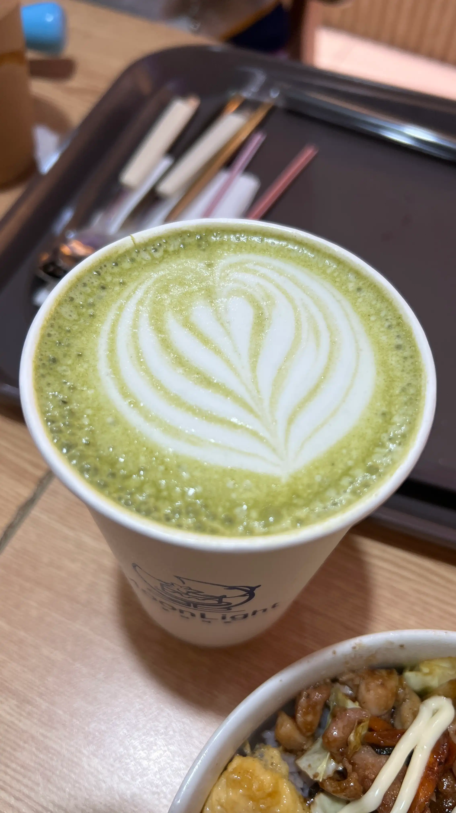
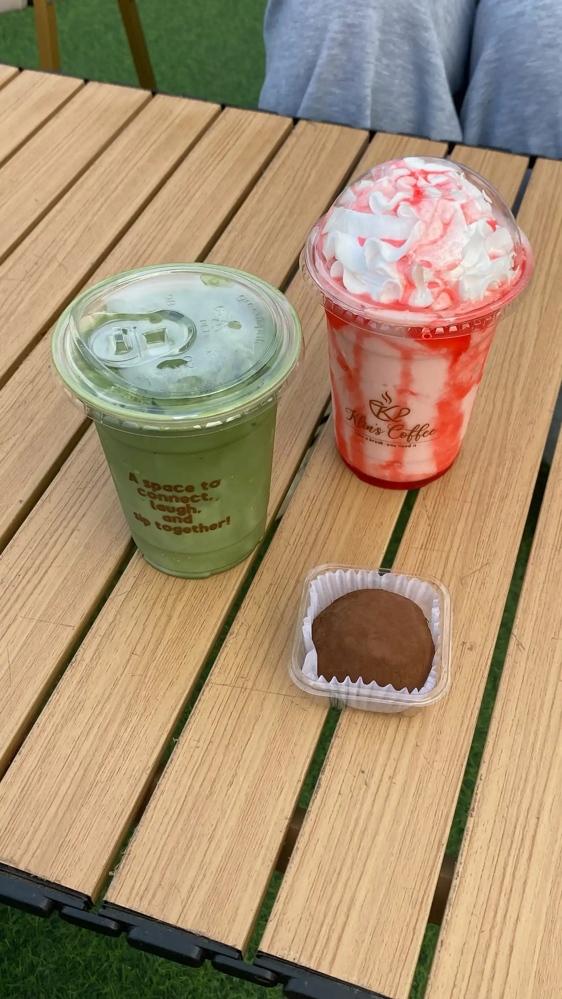
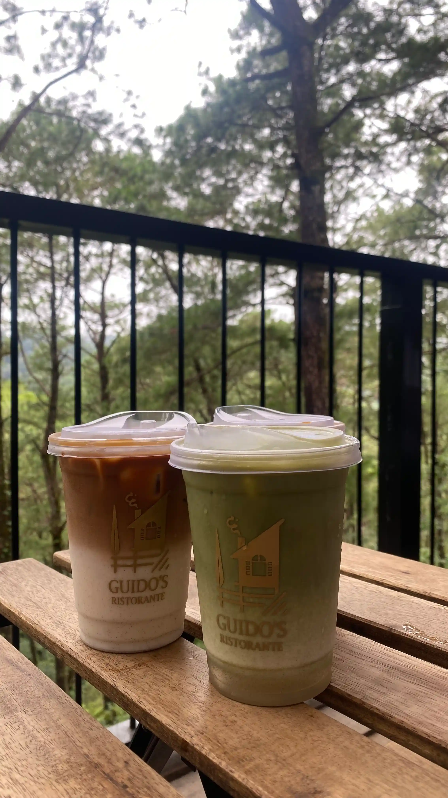
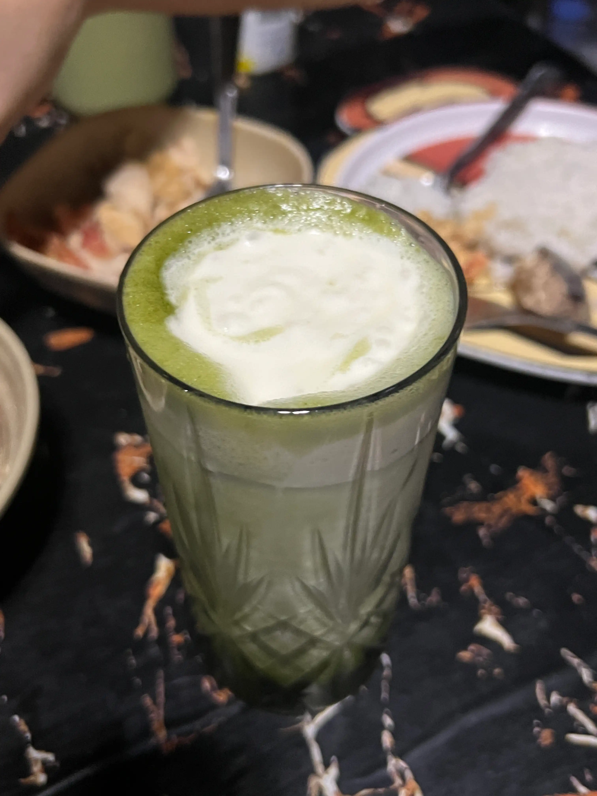
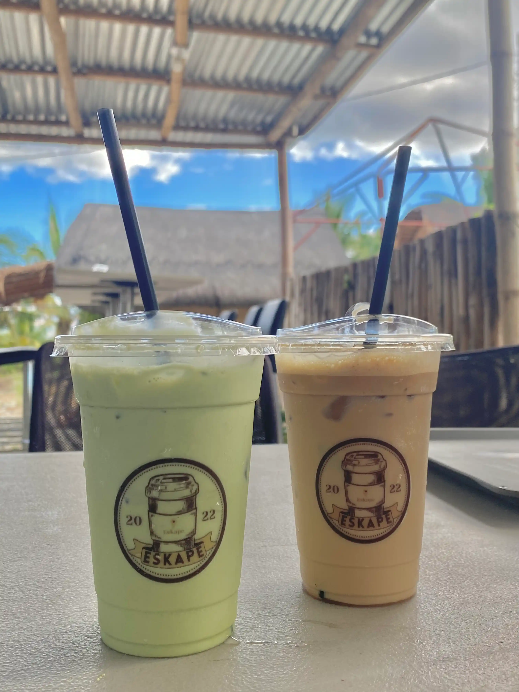
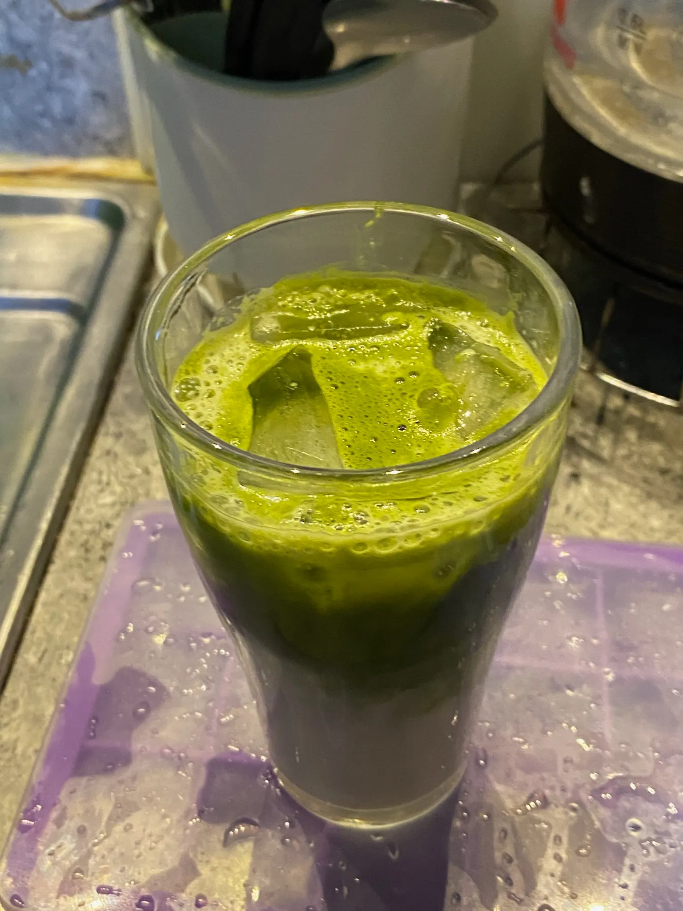
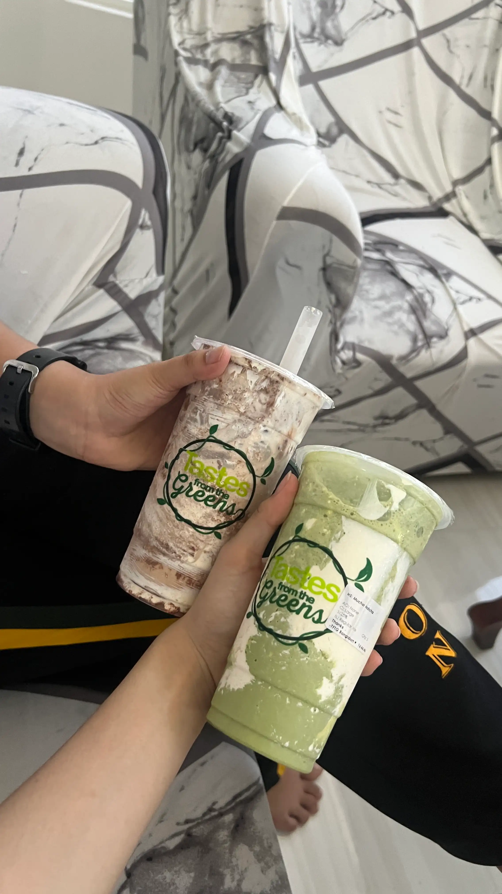
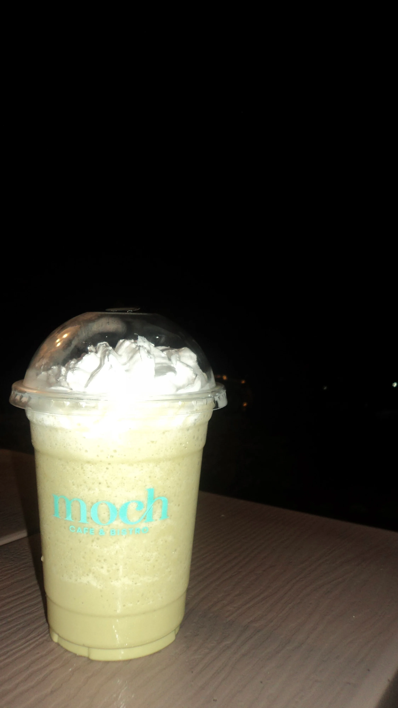
Connect With Me
 @ryyfrncsc
@ryyfrncsc
 Ryza Francisco
ryza14joyce@gmail.com
Ryza Francisco
ryza14joyce@gmail.com